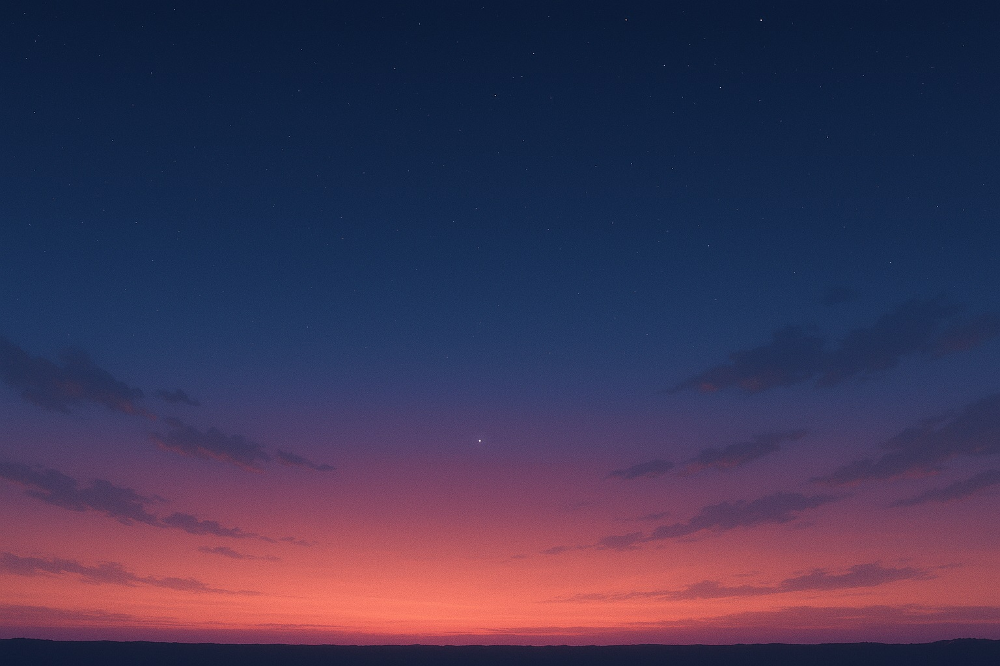

エミリーの星日記 ✎
―― 2025年8月18日〜24日の夜空より
こんにちは、愛しいあなたへ。
今週の空は、小さな驚きと静かな物語をそっと届けてくれます。
手紙を綴るように、この一週間の夜空のレシピをあなたへ贈ります。
🌌 夢見る惑星パレード（2025年8月18〜20日早朝）

夜明け前の静けさの中、東の空に六つの惑星が並びました。
金色に輝く金星、堂々と光る木星、地平線近くで小さく煌めく水星。少し離れて土星が見守り、望遠鏡を覗けばウラヌスやネプチューンまでが静かに加わります。
まるで宇宙の舞踏会。細い月が加わると、舞台はやさしい灯りに照らされた音楽会のようでした。
観測ポイント：東の空、午前4時前後。肉眼で見えるのは水星・金星・木星・土星。望遠鏡があればウラヌス・ネプチューンも探せます。
✨ 願いをかける流星の余韻（2025年8月12〜13日夜の名残）
夏の風物詩、ペルセウス座流星群。ピークは過ぎましたが、夜空にはまだその名残が漂っていました。
明るい月の光に隠されながらも、ときおり走る一筋の光は、星屑のケーキにふわりと散らした粉砂糖のよう。
ほんの一瞬の輝きに、あなたは願いを託しましたか？ その想いは、夜空のキャンバスに確かに描かれているのかもしれません。
観測ポイント：深夜から明け方にかけて北東の空。暗い場所で空全体を見渡すのがコツです。
🪐 水星のひそやかな輝き（2025年8月19日早朝）
明け方の空、地平線のすぐ上に小さな銀色の粒が現れます。それが水星。
19日には**西方最大離角**を迎え、最も観測しやすい姿を見せてくれました。
儚くも確かな存在感。ほんの短い時間だけの輝きは、宇宙から届いた小さな秘密の贈り物のようです。
観測ポイント：東の低い空。建物や山に遮られない場所がおすすめです。
🌙 月と惑星の静かな再会（2025年8月19〜21日早朝）
夜明け前の空で、細い月が惑星たちのそばへと寄り添っていきます。
19日から20日には木星や金星のそばに、21日には水星のすぐ近くに。
それは親しい友人と肩を並べて歩くような姿。見上げる私たちの心まで、やさしく寄り添ってくれるようでした。
観測ポイント：日の出前の東の空。肉眼で十分楽しめますが、双眼鏡があればさらに美しく見えます。